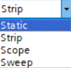
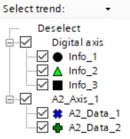
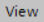
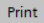
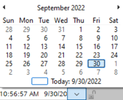

趋势视图
趋势视图允许您在趋势图中可视化多个在线值。趋势是图形格式的重复出现的数据样本。它们显示了指标随时间变化的价值。您可以看到图表中趋势线的增加和减少。
为每个值记录的每个数据都是定期获取的。趋势是引脚的数字和模拟值的数据包信息。该图表示 Y 轴上的数字轴数据和 X 轴上的时间范围。您可以使用一系列颜色来突出显示图表上描绘的线条。
1 | 趋势表 | 2 | 趋势图 |
趋势视图中有两个部分：
- Trend table
- Trend graphic
① Trend table
请参阅下表以了解趋势表中可用的不同列。
特性 | 描述 |
|---|---|
Y axis/trend | pin/trend 值的 Y 轴。 |
标签名称 | 趋势值的名称。 |
流行色 | 趋势值的颜色。 |
强调 | 显示趋势值的粗 /thin 线。 |
采样 | 显示数据的频率。默认值为 0。 |
值表示 | 以点或线的形式表示趋势值。默认表示形式是线。 |
最小 | 用于显示模拟轴最小值的字段。 |
最大限度 | 用于显示模拟轴最大值的字段。 |
单元 | 趋势的单位。 |
轴位置 | 图表中 y 轴的位置。默认为右侧位置。 |
轴模式 | 将轴与您所在的任何视图对齐。 |
② Trend graph
请参见下表了解趋势图的工具栏：
图标 | 特性 | 描述 |
|---|---|---|
横向增加 | 放大水平轴。 | |
横向减少 | 缩小水平轴。 | |
垂直增加 | 放大垂直轴。 | |
垂直下降 | 缩小垂直轴。 | |
 | 显示方式 | 显示不同的图表类型。
|
 | 选择趋势 | 选择要显示的趋势值。 趋势管理器可视化轴分配的趋势。您可以通过禁用相应的复选框来隐藏趋势。隐藏趋势不再记录在趋势图中，但仍以灰色方式显示在图例中。在趋势管理器中选择要编辑的趋势。除了颜色代码之外，趋势图中的趋势还提供了标记，以便能够在图例和趋势管理器中快速识别它们。 |
导出为 csv 文件 | 将趋势图导出为 CSV 文件。 | |
导入 csv 文件 | 导入 CSV 文件。 | |
 | 看法 | 显示和隐藏显示以下元素：
|
| 连接轴 | 导入趋势时，新的 x 轴（例如，轴“B”）可以链接到现有的 x 轴（例如，轴“A”）。在联动模式下，“B”轴与“A”轴同时移动，但可以在不与“A”轴干涉的情况下进行调整。此模式允许您将历史趋势与当前趋势进行比较。 |
 | 打印 | 打印当前显示的趋势图趋势。 |
/ | Lock/unlock | 锁定 /unlocks 沿 y 轴的趋势范围。启用或禁用写保护。 |
 | 时间 | 显示 x 轴左边缘的时间。 |

您最多只能添加 16 个趋势视图。